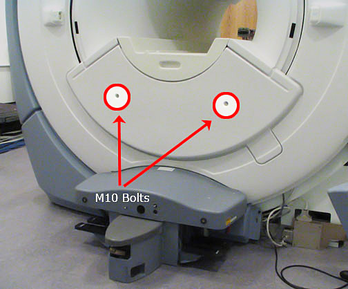
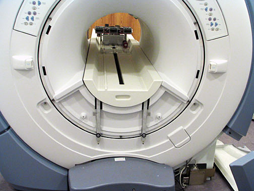
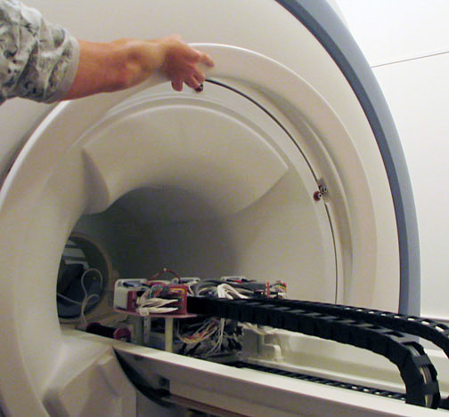
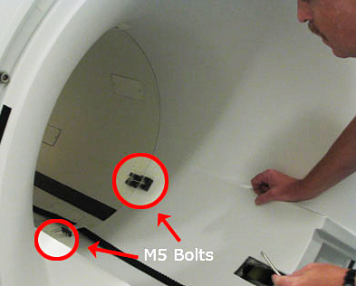
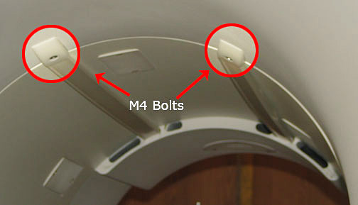
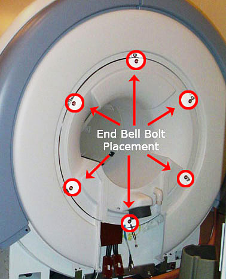

Operating Documentation
Direction 5440000, Rev# 5
Signa HDxt Service Methods
Module Version 1.0, Version Date 4/26/07
Operating Documentation |
| Required Persons | Preliminary Reqs | Procedure | Finalization |
|---|---|---|---|
| 1 | Not Applicable | 5 hours | Not Applicable |
| Item | Qty | Effectivity | Part# | Manufacturer | |
|---|---|---|---|---|---|
| ||||
| Strong Magnetic Field! | ||||
| Ferrous materials can become dangerous projectiles in the presence of the magnetic field Produced by the Signa Magnet. | ||||
| Do not Bring any ferromagnetic tools or equipment into the magnet room. |
| NOTE: | The Rear Cosmetic Ring Cover and the Rear End Bell can be removed independently of each other. |
Follow all Lock Out and Tag Out procedures by turning off the applicable breaker in the PDU (see LOTO for Pen Panel, Patient Blower, and Magnet Room).
Using an M10 Allen wrench, remove the two (2) bolts holding the Lower Cosmetic Cover in place (see Illustration 1) and remove the cover (see Illustration 2).
Illustration 1: Lower Cosmetic Cover

Illustration 2: Lower Cosmetic Cover Removed

Remove the front portion of the split bridge (see Bridge Removal)
Remove Rear Trim Ring by pulling it away from the enclosure. There are no bolts holding it into place (see Illustration 3).
Illustration 3: Remove Trim Ring

Remove the rear pedestal (see Rear Pedestal Removal).
Using an M5 Allen wrench, remove the two (2) lower black fasteners which connect the RF coil and the rear end bell (see Illustration 4).
Illustration 4: Lower End Bell Fasteners

Using a M4 Allen wrench, loosen the two (2) upper bolts that secure the long bands that connect the RF coil and the front end bell. These bolts are accessible from the front of the magnet (see Illustration 5).
Illustration 5: Upper End Bell Fasteners

Remove the six (6) M10 bolts which attach the rear end bell to the turtle bracket (see Illustration 6).
Illustration 6: Rear End Bell Bolts

Remove the end bell and the gasket ring.
| NOTE: | There are several hoses and cables hidden behind the rear end bell. Be careful when removing the end bell so not to inadvertently tug on any cables or hoses. |
Reverse steps to install replacement Rear End Bell.
No finalization steps.